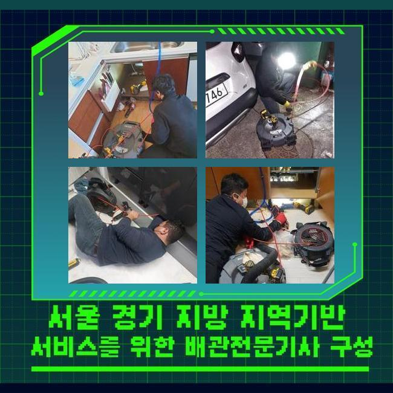
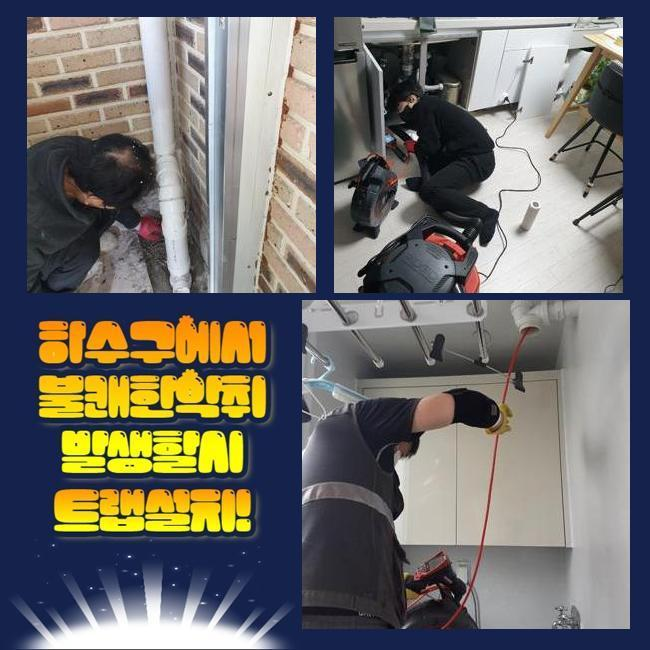
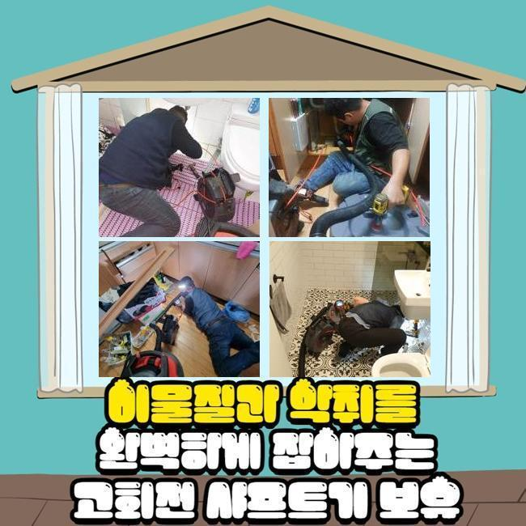
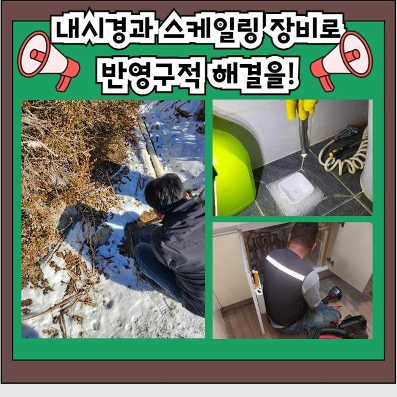
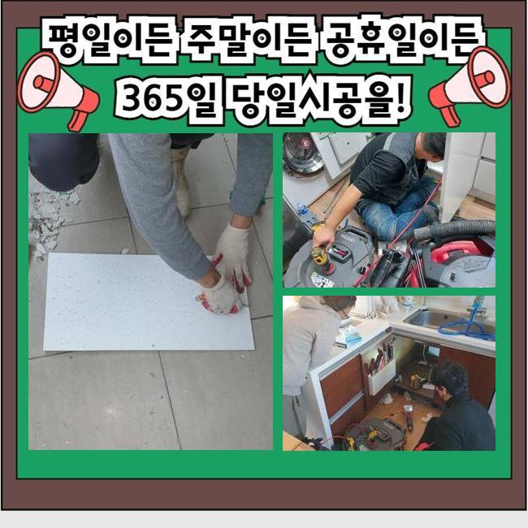
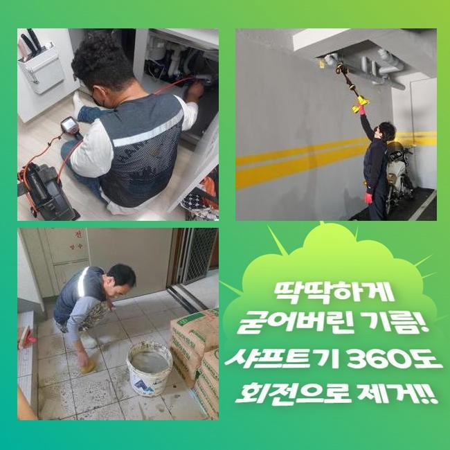
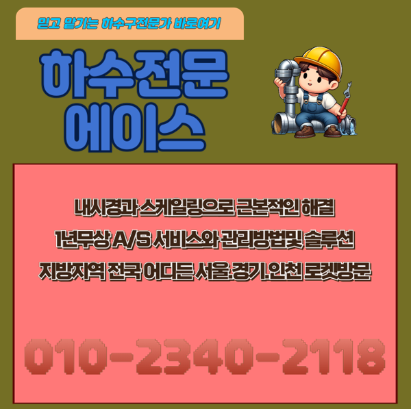

🏠 오전동오수관역류 초평동 하수구청소 설비업체
용인 하수구막힘 전문 시공 후기

📋 작업 개요
- 위치: 용인
- 서비스 유형: 하수구막힘, 배관막힘, 역류해결, 뚫는업체, 배관청소, 고압세척
- 작업 일시: 2025. 4. 15. 16:06
- 업체명: 하수구수사대 (010-5615-2118)
🔍 문제 상황
오전동오수관역류 초평동 하수구청소 설비업체
금일엔 주택에 찾아뵈어 외부라인에 설치된 배관을 고쳐드렸는데요
전문적인 기기를 이용하여 확실히 청소를 했어요
물이 안빠지는 증세들이 불거진것은 열흘정도라고 하셨는데요
관로들은 통수과정에서 오수들을 따라서 잔해들이 흘러가는데 관로에서 점진적으로 누적되면서 개별관로가 막힙니다
잔해물의 축적량과 크기마저 크다면 심화됩니다
이물질마다 전부 배출되는데에는 제약들이 있어서입니다
해당 까닭들로 배수불가의 문제들이 발생되면 셀프의 방식으로 개선들에 다가서지 못하는 경우들이 자주 있어요
고객님들이 자가조치로 평상시에 이용해보는 방법은 클린용액이라던지 식초와 같은것을 부으시는 것일텐데요
문제들이 생기고서 시간들이 길게 흐르지않았을때 시도할 수 있는 방법들이겠으나 외측의 경우엔 이렇다할 해결책이 되지 못해요
외측에서 증상이 보이면 혼자서 풀어가는게 힘들기에 전문가들의 도움들을 생각해주시는것이 좋겠습니다

🔎 원인 분석
💡 전문가 진단: 정밀 진단 장비를 사용하여 슬러지의 고착 여부를 판명하고 타격/세척 작업을 실시했습니다.
전문진들의 해결과정으로서 현장에서 어떻게 정체된건지 근원적인 원인규명은 기본이고 고객님차원에서의 방법관 다르게 안정적으로 잔해들을 없애주어 오랫동안 하수관을 깨끗히 유지하게끔 만들어드려요
이번 물들이 안내려가는 또한 저희전문가들은 적재적소에 맞는 장치들을 활용하여 빈틈없이 잔해까지 제거시키고 깊은부분까지 통수길을 내주었어요
살핀 결과로 바깥부분에 자리하고 있는 지점에서 심화된 양상이 나타났고 대처해보는게 불가능해 작업을 문의하셨죠
저희들은 의뢰인의 일정이 가능할 경우 바로 찾아뵈어 해당 장소에서 작업들을 들어가죠
유선으로 연락을 받아보았을 땐 트러블장소는 마당라인이였는데요
단독주택 바깥에 위치한 배수구가 막힌 탓에 우천상황에서는 솟구치는 상황으로 파악되었죠
특히 비들이 내릴때 쓰레기들이나 담배꽁초와 같이 여러가지의 오염물들이 빠지게됩니다
물청소 등을 할때 갑작스레 하수관으로 안흘러가는 현상이 자주 있었다고 합니다
초반엔 고객은 알아서 잘 내려가겠지 생각하시곤 해결을 늦췄다고 하셨는데요
예상치못한 시점에 미루어서 그런지 갑작스럽게 수도들이 전혀 안내려갔다고 해요
이후에 며칠간의 시간들이 지나고서 배수되는걸 인지하고서 황급하게 연락주신것이였죠

🔧 작업 과정
마당이 단독으로 있어서 이웃에게 피해들을 끼친 경우는 아니였지만 평상 시에 관리적 측면의 조치가 진행되야하는 장소에요
즉각적인 내방이 실시되는 곳들이 소수라 난감하셨는데 저희업체는 바로 가능했기에 곧장 호출을 하신것이였죠
저희전문진들은 시기막론하고 공휴일등에도 작업해드리고 언제든지 배관 관련 작업들을 하므로 즉시 찾아뵈어 이물제거에 집중했답니다
배관의 경우 깊어서 시각적으로 확인하기엔 한계들이 있습니다
문제의 배관에 내시경장치를 투입하여 안보이는 지점에 오염물질들이 어떠한 모습으로 자리했는지 관찰하는데요
내시경장비로 누적된 잔해물질들을 어디서부터 청소해줘야되는건지 계획을 세운다면 합리적인 방법을 선정합니다
일단은 샤프트기기를 써보고 사이즈가 커지는 부분은 고수압의 기계들을 쓰기로 결정했습니다
샤프트장치는 긴 라인에 이물제거를 담당하는 노커부품이 장착되어있는데 이 노커부속이 벽면에 붙은 고착물을 탈락시키는 장비랍니다
전문가용 기계들을 이용하여 안정적으로 오류들을 잡아냈죠
작업을 할 때에 만일 뚫어내지못하면 금액청구는 일절 없을것이라 말씀드려요
저희들은 애초에 고객분이 알려주신 장소로 내방하는 경우 출장관련 금액을 별도로 청구하지 않은채로 찾아뵙기에 금액적인 과중이 덜하게되고 뚫음이 불가하다면 비용도 안받으니 편히 의뢰해보세요!
뚫음시공 이후에 해결들이 안된채로 돌아가면서 출장관련 금액을 받는 경우들은 절대 발생치않는다 보증합니다
다시 현장으로 돌아와 외부에 존재하는 장소로서 흙같은 것들도 빠진 상태였고 침전된 슬러지들과 엉키며 끈적하게 변하고 움직이지 못할정도로 굳은 상태였습니다
딱딱하게 뭉치게되어 센터부터 구멍을 뚫어주었는데요
흡착이 많이 진행된 터라 간단히 해결되는것은 아니였으며 심부라인까지 청소시켜야 했으므로 출수구부터 고압수청소 기계를 운용시켜야되는 현상들이었습니다
고수압의 기계들을 통해서 안정적으로 세척이 요구되는 현상들이었습니다
내시경장치를 쓰면서 계속해서 작업을 이어갔지만 물들이 제대로 흐르는 상태가 아니었습니다
그 까닭으로는 폐기물들과 기름때가 구간별로 구석까지 쌓이게되며 굳어버린 형태로 변모해서인데요


✅ 작업 완료
샤프트도구가 이용되지 못하는 위치로 고수압방식이 동반되야했답니다
그리하여 고수압의 기기를 써 기름을 배출시키며 깊숙히 자리했던 이물을 떨궈내 청소했는데요
뒤탈없이 세척을하니 점진적으로 공간이 확보되며 배수들이 이루어지게 되었고 내측의 지점도 배출이 진행되었어요
이 상황들을 고객분에게 고지하고 해당 장소의 해결은 종료되었죠
재발될 일이 없게끔 사용하실 때 계속해서 관리에 힘쓰시기 바라고 만일 일년동안에 또 생겨나면 저희업체가 무상보증을 이행하니 걱정 붙들어매세요!




⚠️ 하수구 배관 막힘 예방 및 관리 가이드
- ✅ 머리카락, 비닐, 물티슈 등 물에 분해되지 않는 이물질은 하수구 유입을 절대 금지해 주세요.
- ✅ 하수구 거름망을 씌우고 모여진 이물질은 주기적으로 쓰레기통에 바로 비워주셔야 합니다.
- ✅ 배관 노후가 심할 경우 이물질이 더 쉽게 걸리므로 주기적인 배관 세척(고압세척 등)을 권장합니다.
- ✅ 작업 후 1년 이내 재발 시 하수구수사대에서 무상 A/S 보증 서비스를 제공합니다.
💡 핵심 정리
- 확실한 장비 작업(내시경 점검 및 샤프트 스케일링)으로 원인을 뿌리 뽑습니다.
- 작업 후 1년 이내에 동일한 부위 재발 시 100% 무상 A/S 서비스를 보장합니다.
- 서울 · 경기 · 인천 전 지역에 24시간 언제든 긴급 출동할 수 있도록 항시 대기 중입니다.
❓ 자주 묻는 질문 (FAQ)
🚨 용인 하수구막힘 문제로 고민이신가요?
정확한 원인 진단과 확실한 시공으로 재발 없는 해결을 약속드립니다.
24시간 긴급 출동 | 서울 · 경기 · 인천 전지역 | 1년 내 재발 시 무상 A/S